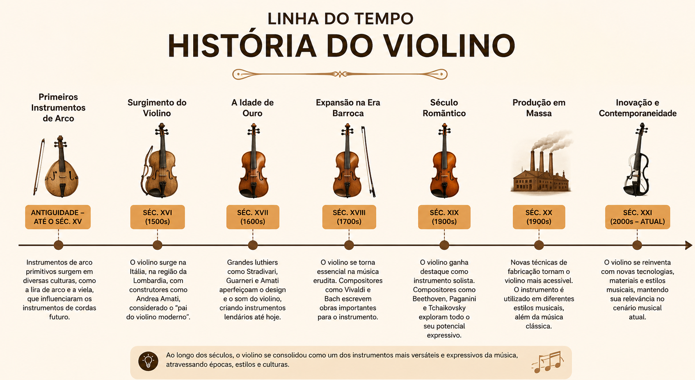
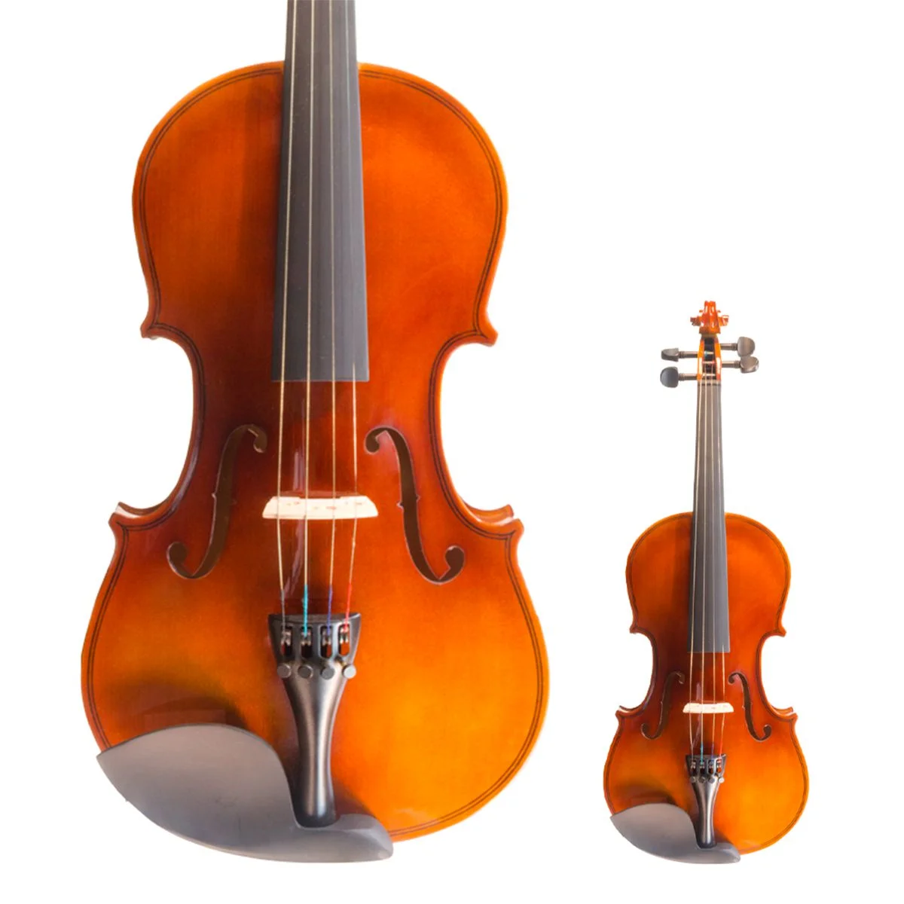
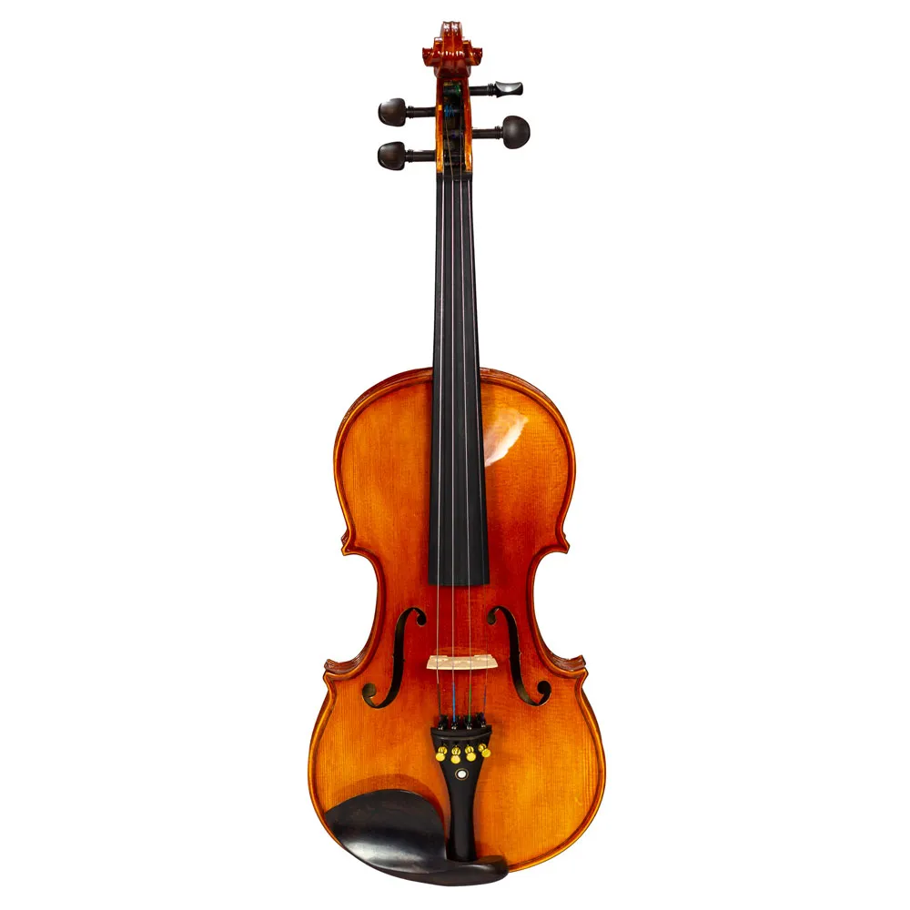
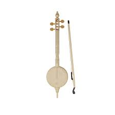

O nome "violino" vem do termo italiano "violino da braccio", que significa "violino de braço", em referência à forma como é tocado. Já o termo italiano " violino " significa pequeno violão.
O violino moderno originou-se no norte da Itália no início do século XVI (por volta de 1550), desenvolvido por luthiers como Andrea Amati. Ele evoluiu de instrumentos medievais de corda friccionada, como a rabeca, o rebab árabe e a lira da braccio, consolidando o formato de quatro cordas.
Andrea Amati é frequentemente citado como o criador do primeiro violino moderno em 1564, em Cremona, Itália. Ele foi ordenado por Catarina de Médici para seu filho Carlos IX, dessa forma o instrumento foi primeiramente classificado como um instrumento da corte real.
O período entre 1600 e 1750 é considerado a “era de ouro” da fabricação de violinos italianos, com os instrumentos produzidos durante este período sendo altamente valorizados até hoje.
Nomes como Johann Sebastian Bach, Antonio Vivaldi e Niccolò Paganini criaram obras marcantes que até hoje são estudadas e tocadas. Suas composições ajudaram a desenvolver técnicas, estilos e a importância do violino na música erudita.
O nascimento do violino elétrico no século XX marca um novo ponto de mudança no design. Agora é possível integrar este instrumento real em composições mais populares, como bandas de rock, pop ou folk, por exemplo.


Violinos Stradivarius são instrumentos lendários construídos por Antonio Stradivari (1644–1737) entre os séculos XVII e XVIII, conhecidos pela qualidade de som excepcional, pela doçura e perfeição estética

Violinos Guarneri são celebrados por seu timbre profundo, escuro e potente, com uma projeção sonora agressiva que atrai solistas em busca de expressividade

Um instrumento de cordas antigo originado no mundo árabe, considerado um dos antecessores do violino, possuindo uma sonoridade marcante e expressiva